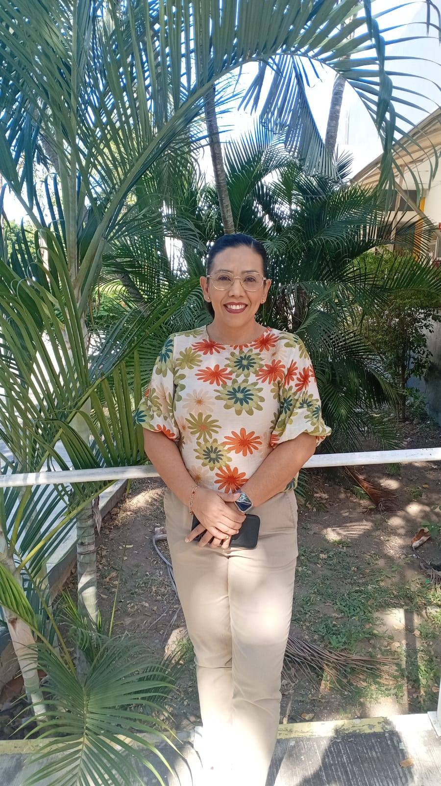
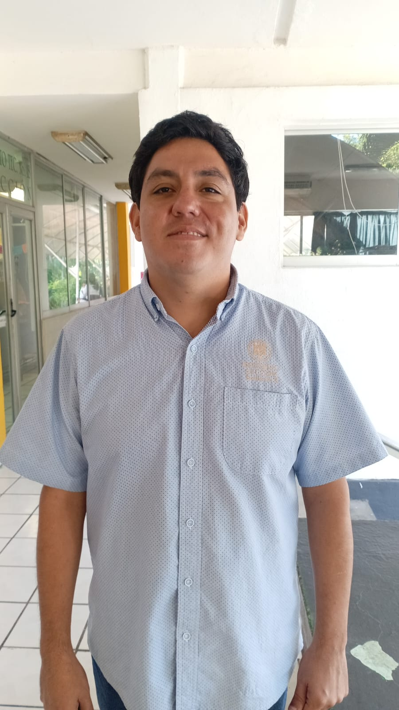
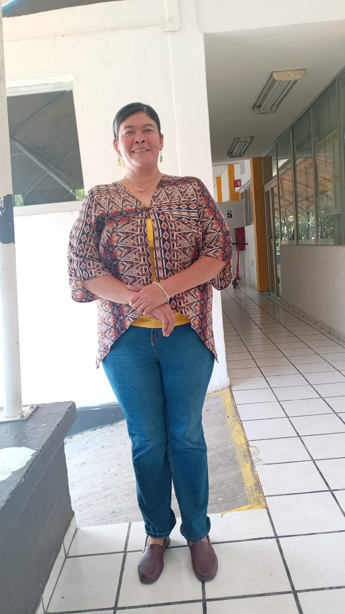
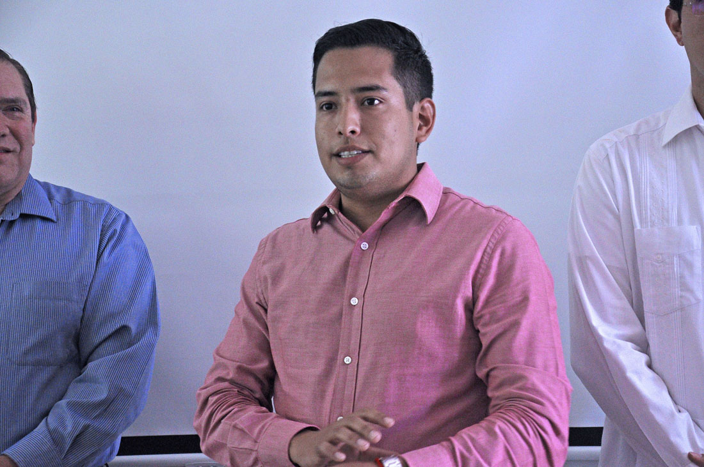

Colaboradores
Este proyecto fue posible gracias al seguimiento y apoyo de:

Dra. Mayra Macías Directora del Plantel

Mtro. Fernando Alberto Docente de seguimiento

Mtra. Miriam Manzo Apoyo Académico
Mtra. Nadia Nuñez Apoyo Académico

Lic. Jesus Brizuela Delegado Coquimatlán
Nombre Pendiente
Rol Pendiente